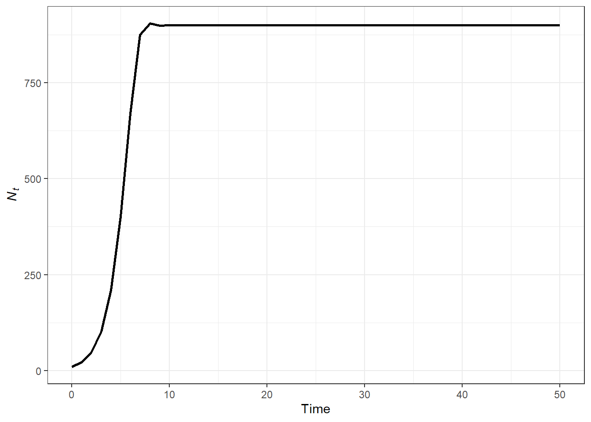

library(tidyverse)
## ── Attaching core tidyverse packages ──────────────────────── tidyverse 2.0.0 ──
## ✔ dplyr 1.1.2 ✔ readr 2.1.4
## ✔ forcats 1.0.0 ✔ stringr 1.5.0
## ✔ ggplot2 3.4.3 ✔ tibble 3.2.1
## ✔ lubridate 1.9.2 ✔ tidyr 1.3.0
## ✔ purrr 1.0.2
## ── Conflicts ────────────────────────────────────────── tidyverse_conflicts() ──
## ✖ dplyr::filter() masks stats::filter()
## ✖ dplyr::lag() masks stats::lag()
## ℹ Use the conflicted package (<http://conflicted.r-lib.org/>) to force all conflicts to become errors
N_0 = 10 #Starting population size
years = 50 #fifty time steps
pop = tibble(time = 0:years,
Nt = NA)
pop$Nt[pop$time == 0] = N_0
pop
## # A tibble: 51 × 2
## time Nt
## <int> <dbl>
## 1 0 10
## 2 1 NA
## 3 2 NA
## 4 3 NA
## 5 4 NA
## 6 5 NA
## 7 6 NA
## 8 7 NA
## 9 8 NA
## 10 9 NA
## # ℹ 41 more rows
rd = 1.2 #geometric growth factor
K = 900 #carrying capacity
#Discrete logistic model using for loop
for(i in 2:length(pop$time)){
pop$Nt[i] = pop$Nt[i - 1] + rd*pop$Nt[i - 1]*(1 - pop$Nt[i - 1] / K)
}
pop
## # A tibble: 51 × 2
## time Nt
## <int> <dbl>
## 1 0 10
## 2 1 21.9
## 3 2 47.5
## 4 3 101.
## 5 4 209.
## 6 5 402.
## 7 6 669.
## 8 7 875.
## 9 8 904.
## 10 9 899.
## # ℹ 41 more rowsWorkshop 5: Density independent models
This workshop cover density dependent population growth models. In these set of models, the change in population size between time points is influenced by the number of individuals in the population. This script will give examples of how to model discrete density dependent population growth models.
R script: github
Discrete density dependent growth models
The basic formula for the discrete density dependent growth model is represented by \[N_{t+1} = N_t + r_dN_t(1-(N_t/K))\] where \(N_t\) is the population size at time \(t\), \(K\) is the carrying capacity of the population, and \(r_d\) is the discrete growth factor. It is important to know that \(r_d = \lambda -1\).
We can use a for loop to calculate discrete density dependent growth

Since we have many arguments, it might make sense for us to use a custom function for this model.
Custom functions
So far we have used functions that are apart of base R or from different packages, but we can also build custom functions. Custom functions are useful when existing functions will not do the task at hand, or when combining functions over multiple times. These can be used for vector operations.
The basic structure is
function_name = function(arguments){
code_here
return(output)
}The arguments can be empty and therefore required, or set equal to a value. If set to a value, the default is that value, but a new value can be indicated that will override the default value.
# custom funciton
my_fx = function(x){
b = x * 23
return(b)
}
my_fx(5)
## [1] 115
t = seq(2,10,2)
my_fx(t)
## [1] 46 92 138 184 230
# custom function with multiple arguments
my_fx2 = function(x,y = 4){
b = x/y
return(b)
}
my_fx2(4)
## [1] 1
my_fx2(4, 5)
## [1] 0.8
my_fx2(4,5)
## [1] 0.8
# custom fucntion with true false
my_fx3 = function(x = T){
if (x == T){
cat('x is true \n')
}else{
cat('x is not true \n')
}
}
my_fx3(x = T)
## x is true
my_fx3()
## x is true
my_fx3(x = F)
## x is not true
my_fx3(x = 5)
## x is not true
# custom functions with vector operations
mi_km = function(mi){
km = mi * 1.60934
return(km)
}
mtcars %>%
mutate(kmpg = mi_km(mpg))
## mpg cyl disp hp drat wt qsec vs am gear carb
## Mazda RX4 21.0 6 160.0 110 3.90 2.620 16.46 0 1 4 4
## Mazda RX4 Wag 21.0 6 160.0 110 3.90 2.875 17.02 0 1 4 4
## Datsun 710 22.8 4 108.0 93 3.85 2.320 18.61 1 1 4 1
## Hornet 4 Drive 21.4 6 258.0 110 3.08 3.215 19.44 1 0 3 1
## Hornet Sportabout 18.7 8 360.0 175 3.15 3.440 17.02 0 0 3 2
## Valiant 18.1 6 225.0 105 2.76 3.460 20.22 1 0 3 1
## Duster 360 14.3 8 360.0 245 3.21 3.570 15.84 0 0 3 4
## Merc 240D 24.4 4 146.7 62 3.69 3.190 20.00 1 0 4 2
## Merc 230 22.8 4 140.8 95 3.92 3.150 22.90 1 0 4 2
## Merc 280 19.2 6 167.6 123 3.92 3.440 18.30 1 0 4 4
## Merc 280C 17.8 6 167.6 123 3.92 3.440 18.90 1 0 4 4
## Merc 450SE 16.4 8 275.8 180 3.07 4.070 17.40 0 0 3 3
## Merc 450SL 17.3 8 275.8 180 3.07 3.730 17.60 0 0 3 3
## Merc 450SLC 15.2 8 275.8 180 3.07 3.780 18.00 0 0 3 3
## Cadillac Fleetwood 10.4 8 472.0 205 2.93 5.250 17.98 0 0 3 4
## Lincoln Continental 10.4 8 460.0 215 3.00 5.424 17.82 0 0 3 4
## Chrysler Imperial 14.7 8 440.0 230 3.23 5.345 17.42 0 0 3 4
## Fiat 128 32.4 4 78.7 66 4.08 2.200 19.47 1 1 4 1
## Honda Civic 30.4 4 75.7 52 4.93 1.615 18.52 1 1 4 2
## Toyota Corolla 33.9 4 71.1 65 4.22 1.835 19.90 1 1 4 1
## Toyota Corona 21.5 4 120.1 97 3.70 2.465 20.01 1 0 3 1
## Dodge Challenger 15.5 8 318.0 150 2.76 3.520 16.87 0 0 3 2
## AMC Javelin 15.2 8 304.0 150 3.15 3.435 17.30 0 0 3 2
## Camaro Z28 13.3 8 350.0 245 3.73 3.840 15.41 0 0 3 4
## Pontiac Firebird 19.2 8 400.0 175 3.08 3.845 17.05 0 0 3 2
## Fiat X1-9 27.3 4 79.0 66 4.08 1.935 18.90 1 1 4 1
## Porsche 914-2 26.0 4 120.3 91 4.43 2.140 16.70 0 1 5 2
## Lotus Europa 30.4 4 95.1 113 3.77 1.513 16.90 1 1 5 2
## Ford Pantera L 15.8 8 351.0 264 4.22 3.170 14.50 0 1 5 4
## Ferrari Dino 19.7 6 145.0 175 3.62 2.770 15.50 0 1 5 6
## Maserati Bora 15.0 8 301.0 335 3.54 3.570 14.60 0 1 5 8
## Volvo 142E 21.4 4 121.0 109 4.11 2.780 18.60 1 1 4 2
## kmpg
## Mazda RX4 33.79614
## Mazda RX4 Wag 33.79614
## Datsun 710 36.69295
## Hornet 4 Drive 34.43988
## Hornet Sportabout 30.09466
## Valiant 29.12905
## Duster 360 23.01356
## Merc 240D 39.26790
## Merc 230 36.69295
## Merc 280 30.89933
## Merc 280C 28.64625
## Merc 450SE 26.39318
## Merc 450SL 27.84158
## Merc 450SLC 24.46197
## Cadillac Fleetwood 16.73714
## Lincoln Continental 16.73714
## Chrysler Imperial 23.65730
## Fiat 128 52.14262
## Honda Civic 48.92394
## Toyota Corolla 54.55663
## Toyota Corona 34.60081
## Dodge Challenger 24.94477
## AMC Javelin 24.46197
## Camaro Z28 21.40422
## Pontiac Firebird 30.89933
## Fiat X1-9 43.93498
## Porsche 914-2 41.84284
## Lotus Europa 48.92394
## Ford Pantera L 25.42757
## Ferrari Dino 31.70400
## Maserati Bora 24.14010
## Volvo 142E 34.43988Function for density dependent growth
Using a custom function we can create a function for density dependent population growth.
Note that it is similar to above but instead of \(N_{t-1}\) to calculate \(N_t\) we are using \(N_t\) to calculate \(N_{t+1}\)
dlogisticD = function(K, rd, N_0, years) {
logis = tibble(Nt = NA, time = 0:years)
logis$Nt[logis$time == 0] = N_0
for(i in 1:(length(logis$time)-1)){
logis$Nt[i+1] = logis$Nt[i] + rd*logis$Nt[i]*(1 - logis$Nt[i] / K)
}
return(logis)
}
dfx = dlogisticD(K = 900, rd = 1.2, N_0 = 10, years = 50)
dfx
## # A tibble: 51 × 2
## Nt time
## <dbl> <int>
## 1 10 0
## 2 21.9 1
## 3 47.5 2
## 4 101. 3
## 5 209. 4
## 6 402. 5
## 7 669. 6
## 8 875. 7
## 9 904. 8
## 10 899. 9
## # ℹ 41 more rowsWe can compare the output of the function to the output of the for loop.
library(ggpubr)
a = ggplot(pop, aes(x = time, y = Nt)) +
geom_line() +
geom_point(color = "red", size = 2, shape = 1) +
labs(x = 'Time', y = expression(italic(N[t])),
title = 'For loop')+
theme_bw()
b = ggplot(dfx, aes(x = time, y = Nt)) +
geom_line() +
geom_point(color = "blue", size = 2, shape = 1) +
labs(x = 'Time', y = expression(italic(N[t])),
title = 'Function')+
theme_bw()
# plot combined
ggarrange(a,b,
nrow = 1)
Relation between growth rate and density
Based on the above population curves, we can see that population growth (\(\Delta N_t\)) starts out small when both \(t\) and \(N_t\) are small, accelerates as \(N_t\) grows, and then over time, slows down and reaches an asymptote of \(K\).
Using mutate() we can calculate the population growth (\(\Delta N_t\)) and the per capita growth (\(\Delta N_t/N_t\)). The population growth is the \(r_dN_t(1-N_t/K)\) of the equation.
pop.1 = pop %>%
mutate(lambda = lead(Nt) / Nt, pop.growth = (rd*Nt)*(1 - Nt/K),
per.capita = pop.growth / Nt)
pop.1
## # A tibble: 51 × 5
## time Nt lambda pop.growth per.capita
## <int> <dbl> <dbl> <dbl> <dbl>
## 1 0 10 2.19 11.9 1.19
## 2 1 21.9 2.17 25.6 1.17
## 3 2 47.5 2.14 54.0 1.14
## 4 3 101. 2.06 108. 1.06
## 5 4 209. 1.92 193. 0.921
## 6 5 402. 1.66 267. 0.664
## 7 6 669. 1.31 206. 0.308
## 8 7 875. 1.03 29.0 0.0331
## 9 8 904. 0.994 -5.00 -0.00553
## 10 9 899. 1.00 1.02 0.00114
## # ℹ 41 more rowsEffect of \(N_0\)
Here we can see how the \(N_0\) affects the output of the model.
We can do so using a nested for loop.
# set initial parameters
years = 20
rd = 1
K = 900
N0s = floor(runif(15, 0, 1.5*K))
#For loop within a for loop example
for(j in 1:length(N0s)){
# set up tibble to store data
popJ = tibble(time = 0:years, Nt = NA, N0 = N0s[j])
# set initial condition
popJ$Nt[popJ$time == 0] = N0s[j]
for(i in 2:length(popJ$time)){
popJ$Nt[i] = popJ$Nt[i - 1] + rd*popJ$Nt[i - 1]*(1 - popJ$Nt[i - 1] / K)
}
# combine
if(j == 1){
popAll <- popJ
}else{
popAll <- bind_rows(popAll, popJ)
}
}
popAll
## # A tibble: 315 × 3
## time Nt N0
## <int> <dbl> <dbl>
## 1 0 1308 1308
## 2 1 715. 1308
## 3 2 862. 1308
## 4 3 898. 1308
## 5 4 900. 1308
## 6 5 900. 1308
## 7 6 900 1308
## 8 7 900 1308
## 9 8 900 1308
## 10 9 900 1308
## # ℹ 305 more rowsThis can also be done by using an if statement in the for loop.
# set up tibble to store data
pop3= tibble(time = rep(0:years, times = length(N0s)),
Nt = NA, N0 = rep(N0s, each = years + 1))
# set N_0
pop3$Nt[pop3$time == 0] = N0s
for(i in 1:length(pop3$time)){
if(pop3$time[i] != 0){
pop3$Nt[i] = pop3$Nt[i - 1] + rd*pop3$Nt[i - 1]*(1 - pop3$Nt[i - 1] / K)}
}
pop3
## # A tibble: 315 × 3
## time Nt N0
## <int> <dbl> <dbl>
## 1 0 1308 1308
## 2 1 715. 1308
## 3 2 862. 1308
## 4 3 898. 1308
## 5 4 900. 1308
## 6 5 900. 1308
## 7 6 900 1308
## 8 7 900 1308
## 9 8 900 1308
## 10 9 900 1308
## # ℹ 305 more rowsPlot results
ggplot(popAll, aes(time, Nt, color = as.factor(N0))) +
geom_line(linewidth = 1)+
labs(y = expression(italic(N[t])),
x = 'Time',
color = expression(italic(N[0])))+
theme_bw()+
theme(legend.position = 'bottom',
legend.text = element_text(size = 8))Why Overshooting \(K\)?
Effect of \(r_d\)
Now let’s see how changing \(r_d\) changes the model output
# initial conditions
years = 50
rds = c(1.3, 1.6, 1.9, 2.2, 2.5, 2.8)
K = 900
N_0 = 100
# set up tibble to store data
pop4= tibble(time = rep(0:years, times = length(rds)),
Nt = NA, rd = rep(rds, each = years + 1))
# set N_0
pop4$Nt[pop4$time == 0] = N_0
for(i in 1:length(pop4$time)){
if(pop4$time[i] != 0){
pop4$Nt[i] = pop4$Nt[i - 1] + pop4$rd[i]*pop4$Nt[i - 1]*(1 - pop4$Nt[i - 1] / K)}
}
pop4
## # A tibble: 306 × 3
## time Nt rd
## <int> <dbl> <dbl>
## 1 0 100 1.3
## 2 1 216. 1.3
## 3 2 429. 1.3
## 4 3 721. 1.3
## 5 4 907. 1.3
## 6 5 898. 1.3
## 7 6 901. 1.3
## 8 7 900. 1.3
## 9 8 900. 1.3
## 10 9 900. 1.3
## # ℹ 296 more rowsPlot the results
ggplot(pop4, aes(time, Nt, color = as.factor(rd))) +
geom_line(linewidth = 1)+
labs(y = expression(italic(N[t])),
x = 'Time',
color = expression(italic(r[d])))+
facet_wrap(~rd, nrow = 2)+
theme_bw()+
theme(legend.position = 'bottom',
legend.text = element_text(size = 8))\(r_d\) = 1.6-1.9 : dampened oscillation
\(r_d\) = 2 - 2.5 : stable two-point cycles
\(r_d\) = 2.5 - 2.6 : stable four-point cycles or more
\(r_d\) > 2.6 : variable cycles around K through time = Chaos
Chaos - non random, complex, and non repeating cycles sensitive to initial conditions
Exercises
Using the sparrows dataset from the primer package, plot the population size over time. Calculate the average \(\lambda\) (hint: you will need to use the geometric mean) for the sparrow population.
Project the population over the next 50 years for the sparrow population using the average \(\lambda\) from exercise 1. For now use the mean sparrow count for \(K\), and use the minimum sparrow count as \(N_0\). Plot the results.
Did it reach \(K\)? If not, how many years does it take based on your \(r_d\)? Plot the results.
Challenge: Simulate/Project the sparrow based on different \(K\) = 25, 30, 40, 50. Plot the results.